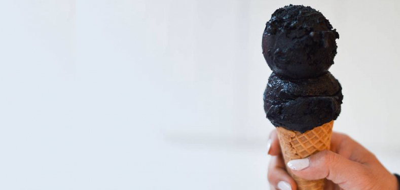

Zanimljive činjenice o sladoledu
Neodoljivo ledeno zadovoljstvo
Gotovo da nema osobe koja tokom toplih dana ne uživa u sladoledu. On je ukusan, sladak, neodoljiv, prosto savršen. Preliven, na štapiću, u kornetu... sladoled može da popravi raspoloženje za samo nekoliko trenutaka.
Istraživanja pokazuju da samo jedna kugla izaziva lučenje hormona sreće, što je dovoljno da se odmah osećamo bolje. Istorija sladoleda duga je koliko i istorija čovečanstva, a ova omiljena poslastica doživela je potpunu evoluciju od trenutka kada je nastala.
Nekada je bila luksuz, danas navika, nekada jednostavna mešavina leda i šećera, dok se danas služi u najneverovatnijim kombinacijama i ukusima. Ono što se kod sladoleda nikada nije promenilo jeste činjenica da je jedna od najukusnijih i najpopularnijih poslastica na svetu. Pročitaj više...
Neobični ukusi sladoleda - Kulinarski putopis

Čokolada, vanila, jagoda neki su od uobičajenih i verovatno najomiljenijih ukusa ledenih poslastica. Međutim, u nekim zemljama u ponudi su i krajnje neobični ukusi sladoleda, piše Daily Meal.
Kavijar. Luksuzna namirnica sada je našla svoj put i do ledenih poslastica. Sladoled koji sadrži do 60 procenata kavijara može se naći u restoranu Filip For u Francuskoj. Međutim, ovaj restoran nudi posebnu uslugu - dostavu ovog luksuznog sladoleda koji se pakuje u specijalnu ambalažu i može ostati zaleđen do 72 sata.
Senf. Iako je često u senci kečapa i majoneza, senf je konačno dobio svojih pet minuta, bar kada su poslastice u pitanju. Naime, u Britanij se može naći sladoled sa neobičnom kombinacijom ukusa šećera i senfa. Pročitaj više...
Neobičan sladoled - hit u Njujorku
Sa porastom temperature, u Njujork je stigao i mat crni sladoled.
Na tržište, kojim dominiraju šareni slatkiši jarkih boja, stiže ‘zift crni’ sladoled.
Proizvodi ga poslastičarnica Morgenstern’s Finest Ice Cream, a suprotno mišljenju ljudi koji ga još nisu probali – nema ukus uglja, na koji neodoljivo podseća. Pročitaj više...